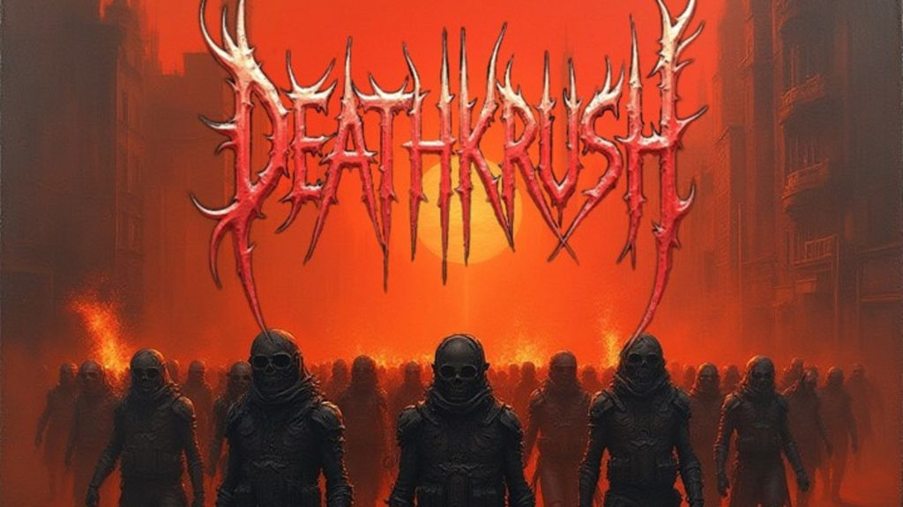

Deathkrush: Stares Down the End With Plague Protocol

The following feature is now included in our online magazine which is also available in print.
Issue #10
Online Magazine | Print MagazinePlague Protocol has the sound of a record recorded under a black sky, loud enough to drown out all else. Deathkrush embraces the weight and the size on this record, crafting tracks that have a physicality about them but never losing their form in the process. The guitars churn and writhe, low and thick, a body of tension that never abates. The drumming toggles from all-out sprint to crushing weight, imbuing the record with a vital, organic pulse that keeps the listener on the end of the next beat.
The vocals enter with a wash, screaming abrasively against deep, guttural rumbles. There isn’t a sense of frontman swagger, but rather a sense of multiple voices intersecting, ritualistic and feral. Lyrics find Plague Protocol circles collapse, both internal and cosmic, describing destruction as both terrifying and transformative. It recalls the weight of early Gojira, the drama of Fit for an Autopsy, and the bleak scope of contemporary deathcore, but doesn’t derive from any one source.
This is not background music. *Plague Protocol* requires attention, just as with other movies such as *Road* or *Children of Men*, which immerse you in a pessimistic atmosphere that lingers with you. Listeners seeking something heavy yet well-thought-out rather than just thrown together will appreciate what Deathkrush has to offer.
This dispatch was last updated on January 16, 2026